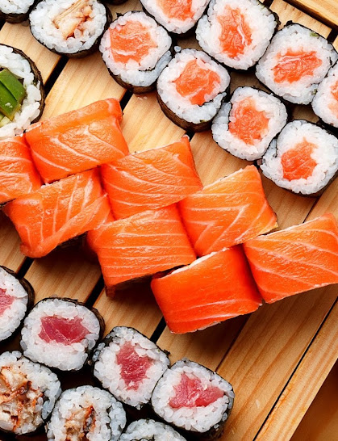
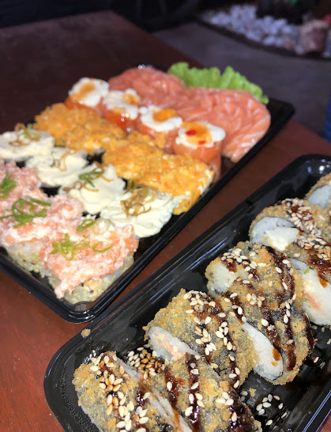
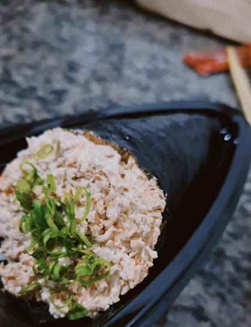

Sushis especiais
Salmão, cream cheese, amêndoas laminadas e molhos agridoces sobre arroz temperado.
Salmão cortado na hora, uramakis, hot rolls e temakis. Peça online para entrega ou retirada, ou venha comer no salão.

Uma amostra do que sai da nossa cozinha. O cardápio completo, com todos os preços, fica no pedido online.
Salmão, cream cheese, amêndoas laminadas e molhos agridoces sobre arroz temperado.

Empanados na hora, com gergelim e molho tarê por cima.

Cone de alga crocante cheio de salmão desfiado e finalizado com cebolinha.
E também: sashimis e niguiris de salmão, uramakis de salmão e atum, combinados para dividir.
Abrir o cardápio completoQuando a mesa é grande, a bandeja resolve: um pouco de cada coisa boa, do salmão fresco ao hot roll crocante.
Escolha os itens no cardápio online, finalize o pedido e acompanhe a entrega. Prefere conversar? Chame a gente no telefone.
Nota média em 48 avaliações no Google.
“Comida japonesa de muita qualidade! Tudo veio extremamente fresco, bem preparado e com ótimo sabor.”
Barbara Lemes, avaliação no Google
“Excelente atendimento, bastante variedade.”
Felipe Gabriel Teodoro, Local Guide no Google
Estamos no centro de Pederneiras. Sente no salão, leve para casa ou peça pela internet.
Fecha às 22:30. Os horários de cada dia estão no Google Maps.
R$ 120–140 por pessoa, segundo clientes.